01 / AI MUSICDaylight Can Wait
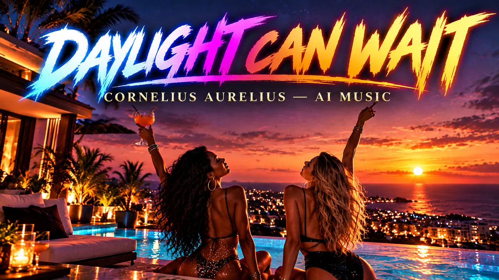
CORNELIUS AURELIUS · AI MUSIC
Original song ideas brought to life with AI assistance. Discover the music, the song titles and the stories they explore.
Created using AI music tools and transparently labelled AI Music.

THE MUSIC COLLECTION
Explore the artwork for twenty songs by Cornelius Aurelius, each with its own cover.

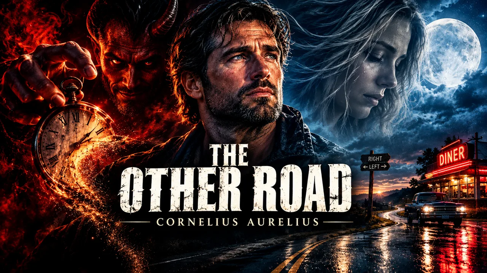
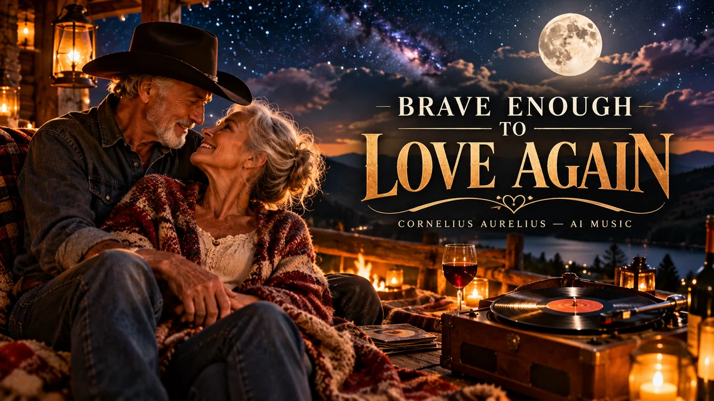
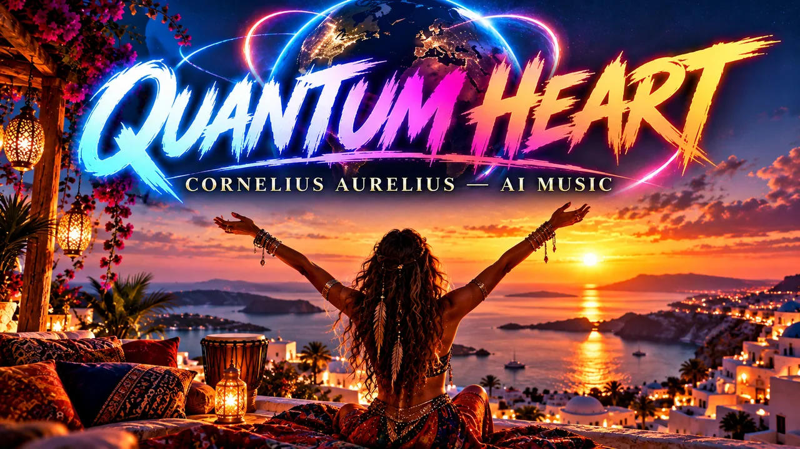
Cornelius Aurelius · AI Music
Explore the AI Music channel ↗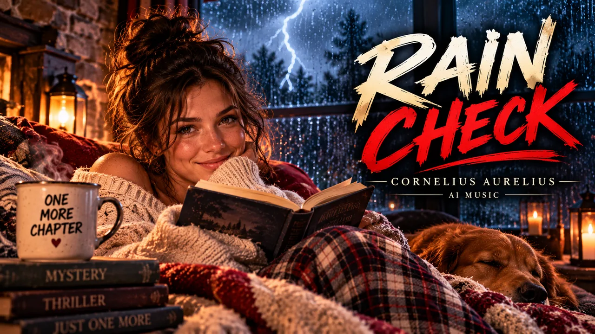
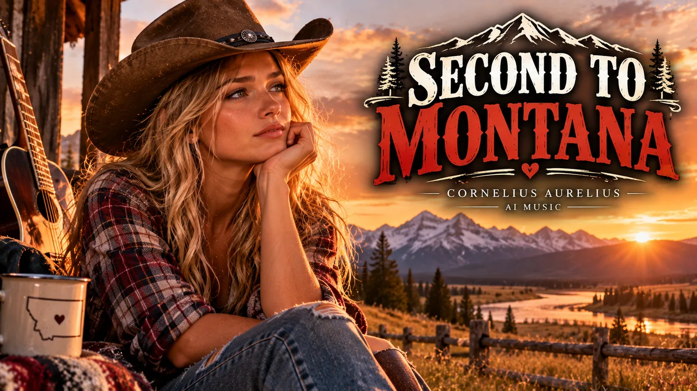


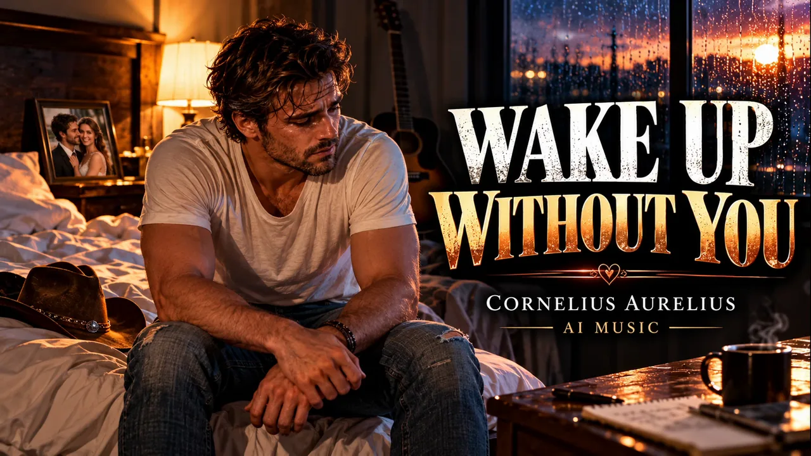
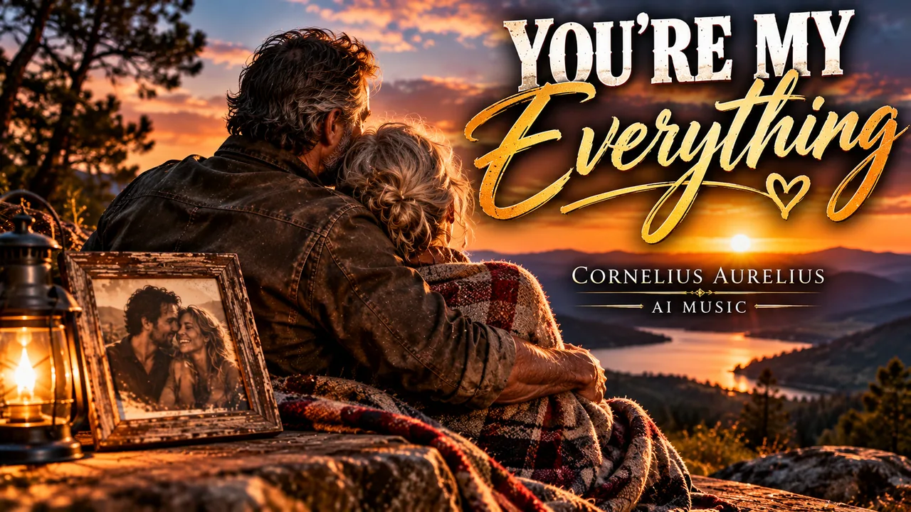
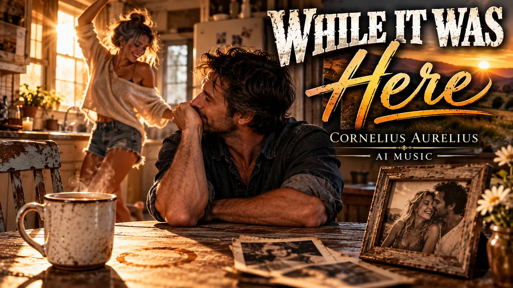
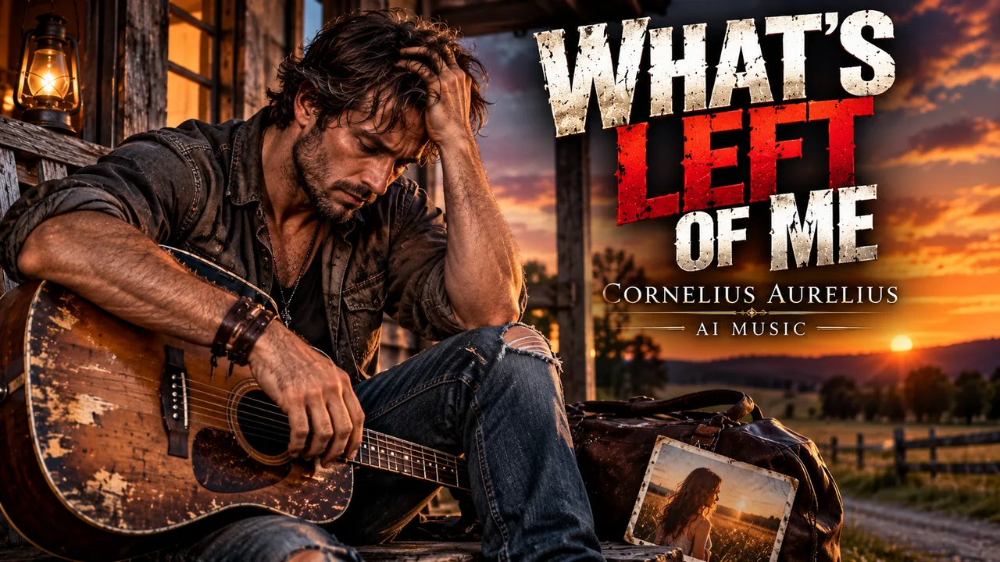
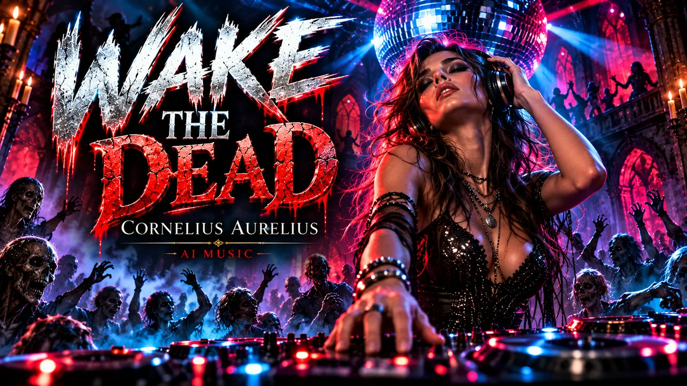
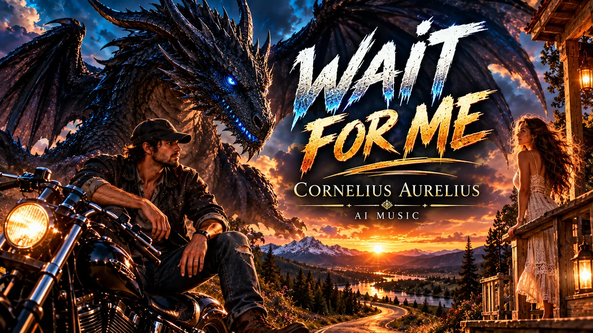
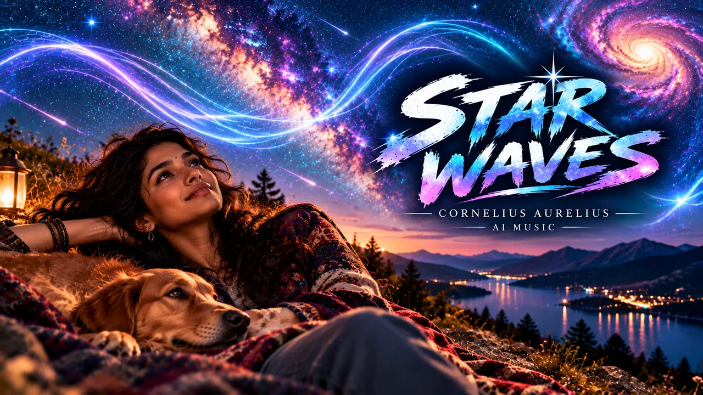